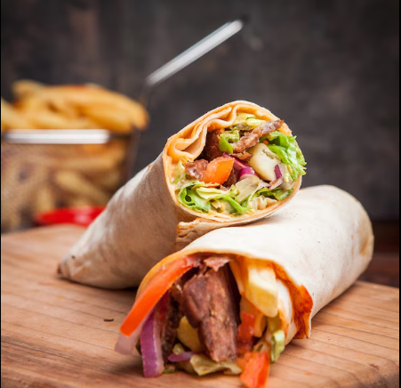

Homepage
Making shawarma

image sourced from Freepik
Shawarma
Shawarma: A Middle Eastern street food made of thinly sliced, seasoned meat,
(often chicken, beef, or lamb) roasted on a vertical spit and served in flatbread with veggies and sauce
Ingredients for making shawarma
- 500g (1 lb) chicken (thigh or breast)
- 2 tbsp oil
- 1 lemon (juice)
- 2 garlic cloves (minced)
- 1 tsp paprika
- 1 tsp cumin
- Salt & black pepper (to taste)
- Flatbread or pita
- Sliced tomato, cucumber, onion (optional)
- Yogurt or mayo (for sauce)Yogurt or mayo (for sauce)
- Marinate chicken: Mix oil, lemon juice, garlic, paprika, cumin, salt, and pepper. Add chicken and coat well. Rest 30 mins.
- Cook chicken: Pan-fry or grill until cooked through and golden.
- Slice: Cut chicken into thin strips.Slice: Cut chicken into thin strips.
- Assemble: Place chicken in bread, add veggies, drizzle yogurt or mayo
- Wrap & eat